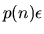
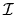

The usual error analysis of the symmetric eigenproblem (using any LAPACK routine in subsection 2.3.4 or any EISPACK routine) is as follows [85]:
The computed eigendecomposition is nearly the exact eigendecomposition of A+E, i.e., is a true eigendecomposition so that is orthogonal, where and . Here p(n) is a modestly growing function of n. We take p(n)=1 in the above code fragment. Each computed eigenvaluediffers from a true
by at most
Thus large eigenvalues (those near ) are computed to high relative accuracy and small ones may not be.
There are two questions to ask about the computed eigenvectors: ``Are they orthogonal?'' and ``How much do they differ from the true eigenvectors?'' The answer to the first question is that except for eigenvectors computed by computational routine xSTEIN (which is called by drivers with names ending in -EVX when only a subset of the eigenvalues and eigenvectors are requested), the computed eigenvectors are always nearly orthogonal to working precision, independent of how much they differ from the true eigenvectors. In other words
for . xSTEIN almost always returns orthogonal eigenvectors, but can occasionally fail when eigenvalues are tightly clustered.
Here is the answer to the second question about eigenvectors. The angular difference between the computed unit eigenvectorand a true unit eigenvector zi satisfies the approximate bound
if  is small enough. Hereis the absolute gap between
Letbe the invariant subspace spanned by a collection of eigenvectors , where  is a subset of the integers from 1 to n. Let
be the corresponding true subspace. Then
where
is the absolute gap between the eigenvalues in and the nearest other eigenvalue. Thus, a cluster of close eigenvalues which is far away from any other eigenvalue may have a well determined invariant subspace
In the special case of a real symmetric tridiagonal matrix T, the eigenvalues and eigenvectors can be computed much more accurately. xSYEV (and the other symmetric eigenproblem drivers) computes the eigenvalues and eigenvectors of a dense symmetric matrix by first reducing it to tridiagonal form T, and then finding the eigenvalues and eigenvectors of T. Reduction of a dense matrix to tridiagonal form T can introduce additional errors, so the following bounds for the tridiagonal case do not apply to the dense case.
The eigenvalues of T may be computed with small componentwise relative backward error () by using subroutine xSTEBZ (subsection 2.4.4) or driver xSTEVX (subsection 2.3.4). If T is also positive definite, they may also be computed at least as accurately by xPTEQR or xSTEGR (subsection 2.4.4). To compute error bounds for the computed eigenvalues
where p(n) is a modestly growing function of n. Thus if is moderate, each eigenvalue will be computed to high relative accuracy, no matter how tiny it is. The eigenvectors
if is small enough, where is the relative gap between
could be computed by applying xPTCON (subsection 2.4.1) to H. The relative gaps are easily computed from the array of computed eigenvalues.